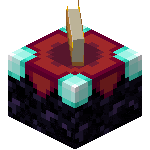

Journal
Journal, mainly website related but if there's any work related stuff It'll most likely be in the projects section or here 🤷🏻
Journal, mainly website related but if there's any work related stuff It'll most likely be in the projects section or here 🤷🏻
